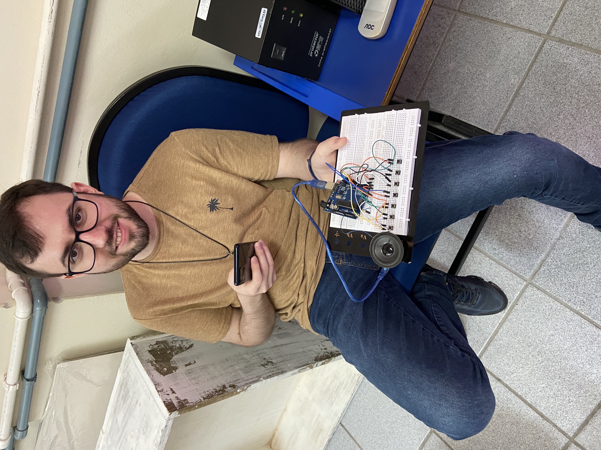
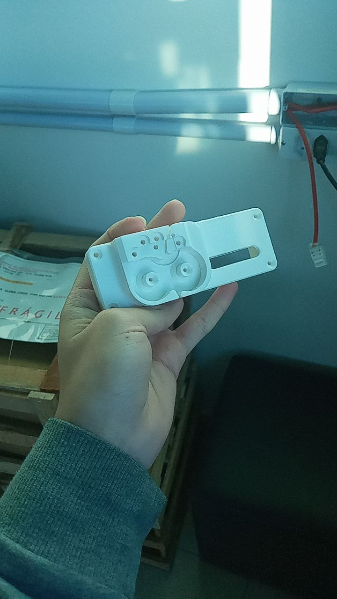
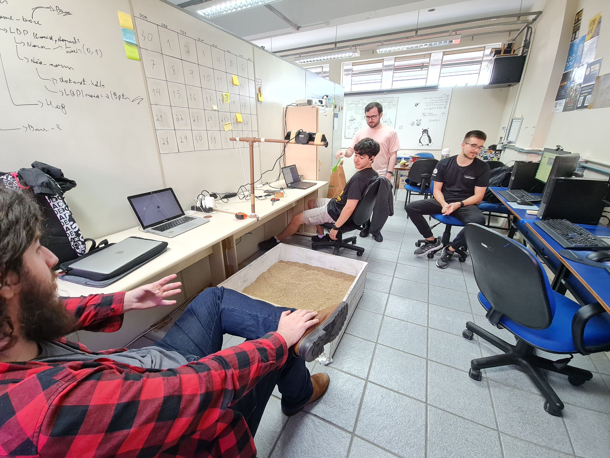
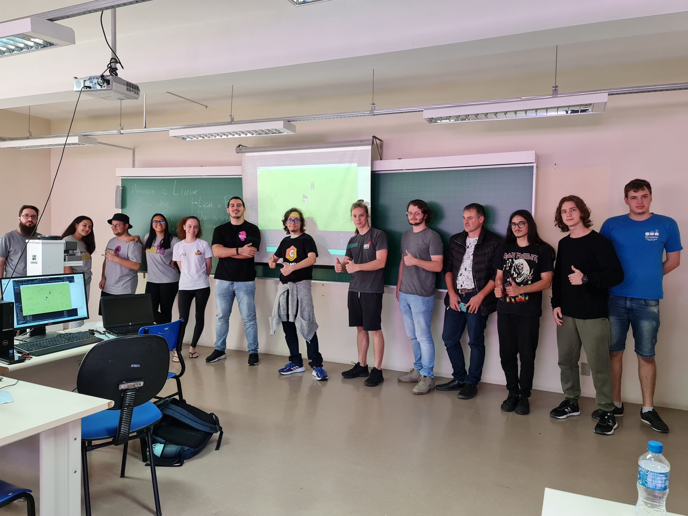
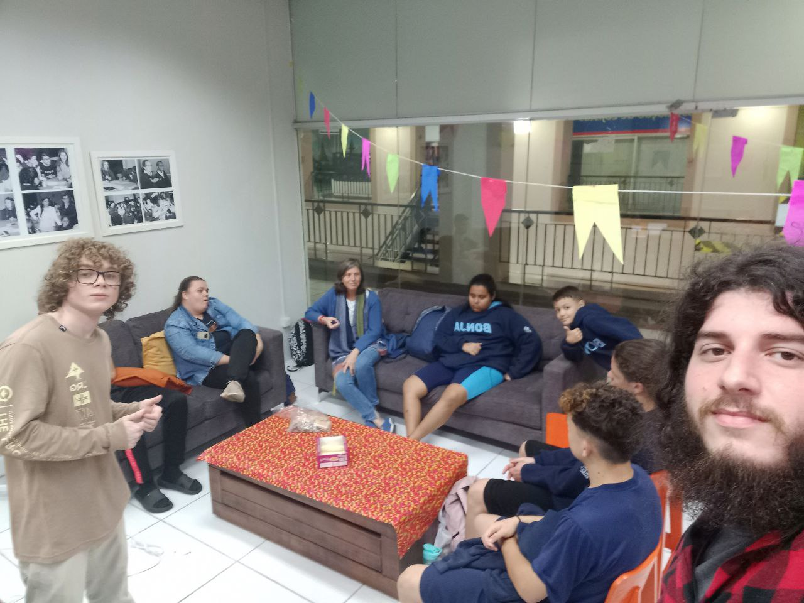

Hardware
Arduino Itinerante
O curso visa a compreensão de sistemas eletrônicos a partir do controle de circuitos elétricos com Arduino. Além disso, são lecionadas aulas de programação básica para a utilização dos kits. Durante as aulas, os alunos aprendem os conceitos básicos de eletrônica, como resistores, capacitores, diodos e transistores, e como esses componentes podem ser utilizados para construir circuitos simples. Em seguida, eles são introduzidos ao Arduino e aprendem a conectá-lo aos circuitos e programá-lo para controlar diferentes aspectos dos projetos. Ao final do curso, os alunos terão adquirido uma base sólida em eletrônica, programação e utilização do Arduino. Eles estarão aptos a desenvolver seus próprios projetos eletrônicos, explorar novas ideias e continuar aprendendo nessa área em constante evolução. O curso busca capacitar os estudantes a se tornarem criadores e solucionadores de problemas no mundo da eletrônica e da programação.

Reciclagem PET - Filamento de impressão 3D
O projeto visa o reaproveitamento e a redução da produção do termoplástico polietileno tereftalato (PET) a partir de uma peça de extrusão regularmente utilizada em impressoras 3D. Além dos benefícios ambientais, a utilização do PET reciclado também pode proporcionar vantagens econômicas, uma vez que o material reciclado geralmente é mais barato do que o PET virgem. Isso pode incentivar a adoção dessa abordagem por empresas e indivíduos que utilizam impressoras 3D, tornando-a uma alternativa sustentável e viável. Clique aqui para acessar o repositório no GitHub.

Caixa de Areia - Kinect Livre
Utilizar o kinect alocado para o Colmeia juntamente com tecnologias abertas para produção de projetos de exposição.
Software
Desenvolvimento de Jogos Open-Source
divulga ferramentas Open-Source para desenvolvimento de jogos, como o Godot, que traz uma linguagem própria, o GDscript, de sintaxe simples, com várias funcionalidades que viabilizam a criação de jogos. Além disso, é abordado o Aseprite, ferramenta de criação de sprites em pixelart, em código aberto. No entanto, para acessar a ferramenta gratuitamente, precisa ser compilada do código fonte. Tal processo será demonstrado nas aulas de Aseprite, sendo desenvolvido e disponibilizado um script para compilação do código. O objetivo atual é desenvolver um jogo completo, apresentando as capacidades das ferramentas open source, a fim de ministrar cursos e uma GameJam –competição de desenvolvimento, utilizando tais ferramentas, a partir de um tema predefinido – na UDESC, assim, divulgando ainda mais projetos Open Source.

Resgate Python
Em parceria com o Projeto Resgate realizar aulas quinzenais de Python para crianças carentes, assim promovendo o desenvolvimento do pensamento crítico e familiarizando elas com o mundo da computação. As aulas serão quinzenais e abordarão desde o básico da programação e do pensamento algorítmico até funções mais avançadas e uso da biblioteca Tkinter para criação de um aplicativo como projeto final. Serão ministradas na sala do Projeto Resgate no shopping Cidade das Flores com o uso de 12 chromebooks de propriedade do Projeto Resgate.
Comunicação

Rádio UDESC
São apresentados, esporadicamente, curtos episódios na Udesc FM Joinville (FM 91,9 MHz) durante o programa "Sustentabilize-se". A partir deles são divulgadas notícias, tecnologias e atualidades relacionadas ao software e hardware livres. Clique aqui para conferir a programação.

Visitação às escolas
Mostrar aos estudantes do ensino médio e fundamental como é o curso de Ciência da Computação, na intenção de instigá-los a seguir uma vida acadêmica. Além disso, aproveitamos a situação para divulgar o software e hardware livre, através de nossos projetos.Visitas são coordenadas pela direção de extensão, promovendo diversos grupos em vários colégios de Joinville e região.